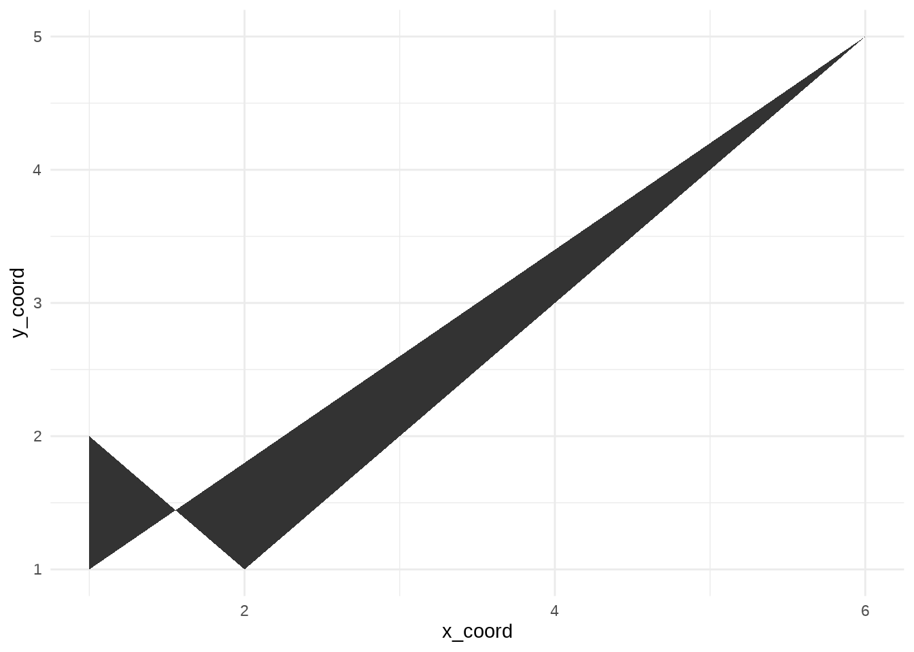
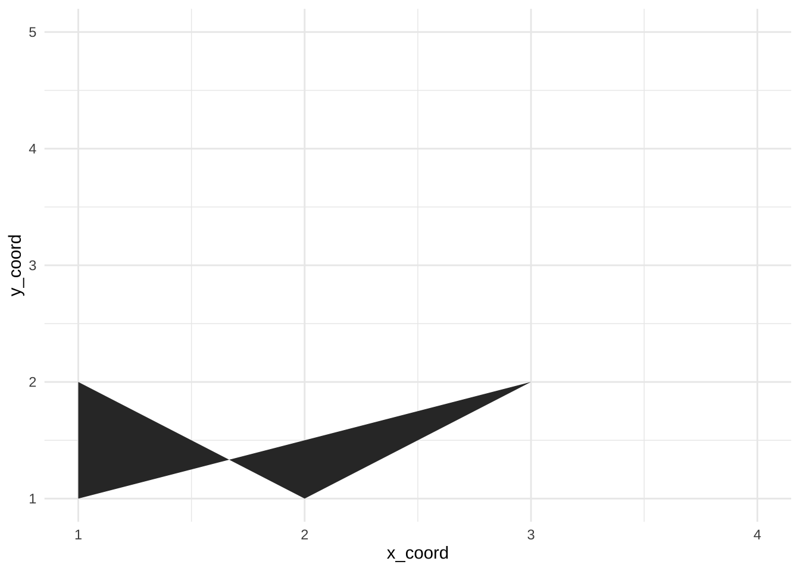
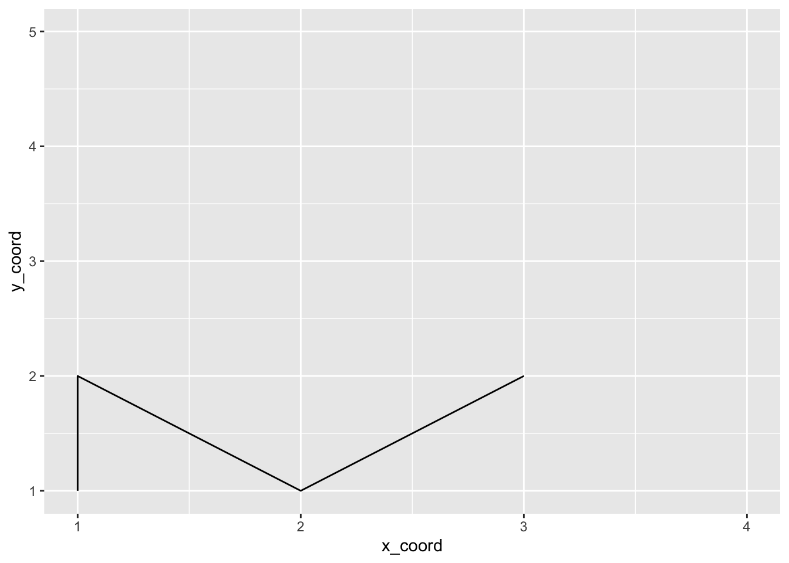
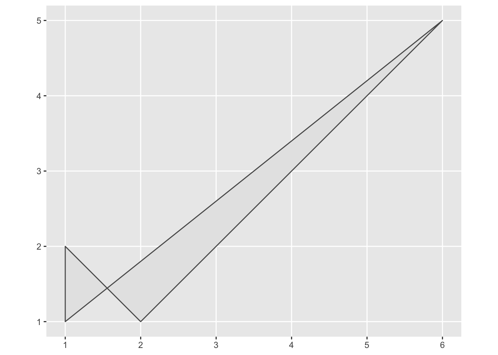
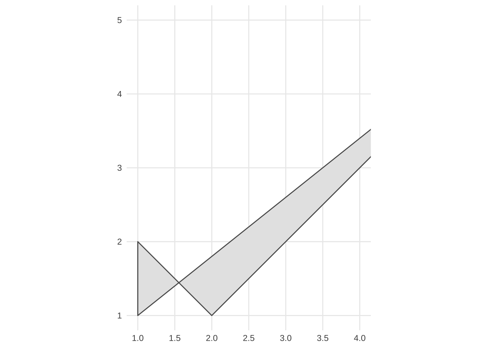
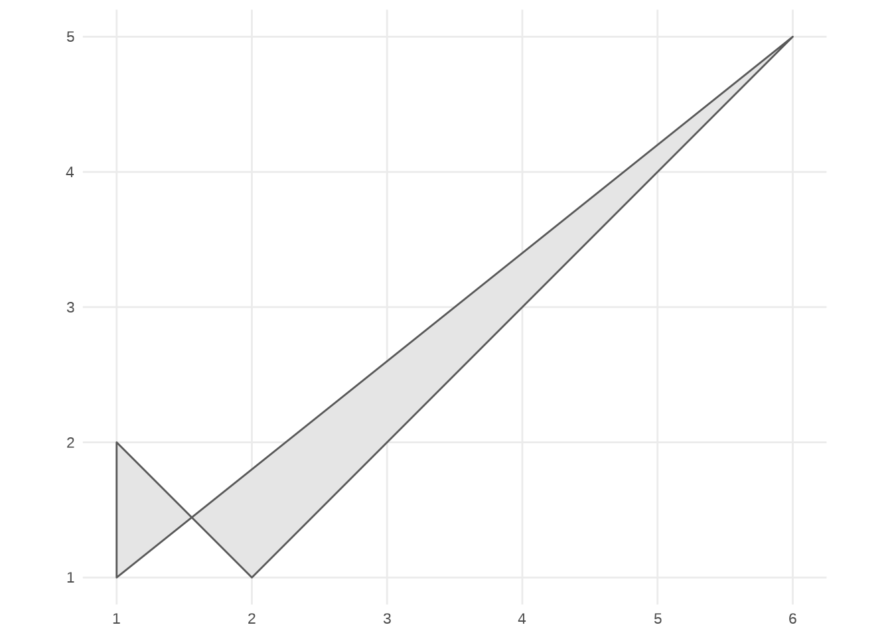
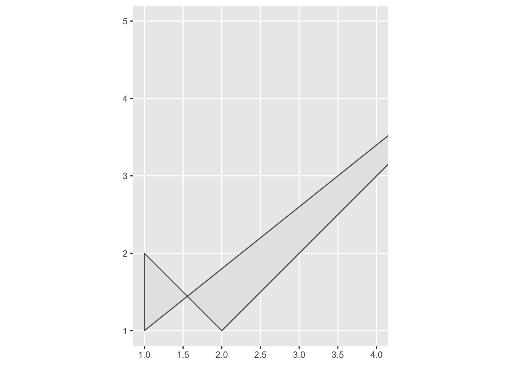
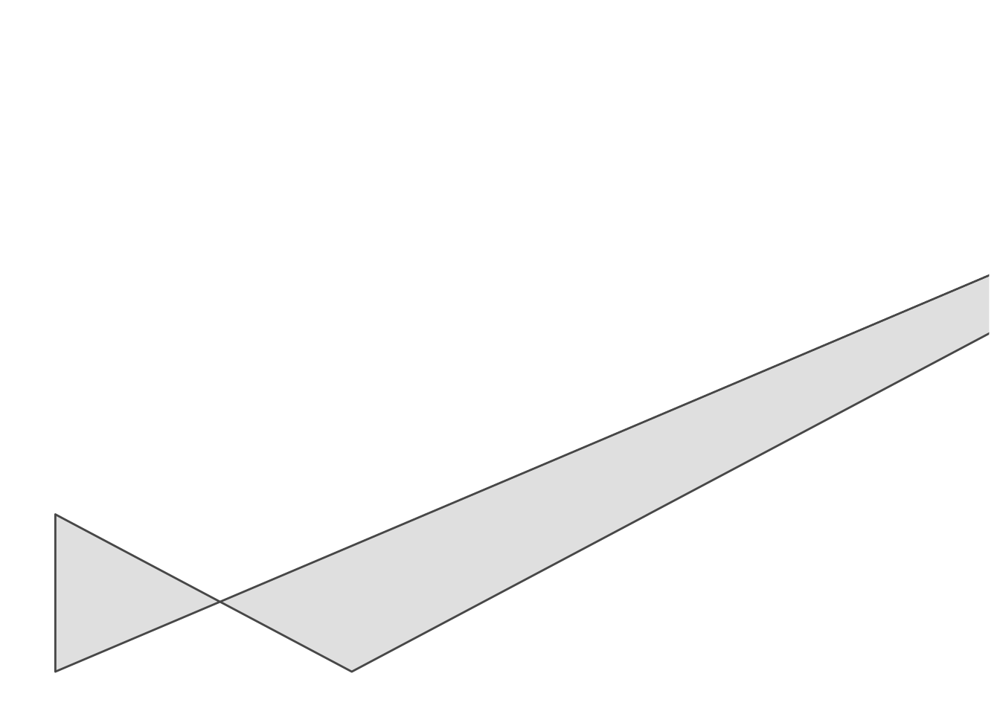

10.6 ASIDE - geom_sf() + limits
10.6.1 Example from Twitter:
https://twitter.com/Josh_Ebner/status/1470818469801299970?s=20
10.6.2 Reprexes from Ryan S:
## Registered S3 methods overwritten by 'proxy':
## method from
## print.registry_field registry
## print.registry_entry registry## Linking to GEOS 3.8.1, GDAL 3.2.1, PROJ 7.2.1; sf_use_s2() is TRUE## # A tibble: 6 × 2
## x_coord y_coord
## <dbl> <dbl>
## 1 1 1
## 2 1 2
## 3 2 1
## 4 3 2
## 5 6 5
## 6 1 1Full range polygon

Polygon with limits
poly_plygn_1 <- plygn_1 %>%
ggplot() +
geom_polygon(aes(x_coord, y_coord)) +
scale_x_continuous(limits = c(1, 4))
poly_plygn_1
Path with limits
path_plygn_1 <- plygn_1 %>%
ggplot() +
geom_path(aes(x_coord, y_coord)) +
scale_x_continuous(limits = c(1, 4))
path_plygn_1
geom_sf() without limits
sf_plygn_1 <- plygn_1 %>% # tibble of coords
as.matrix() %>% # make into a matrix
list() %>% # make into a list
st_polygon() %>% # make into sf object
ggplot() + # call ggplot
geom_sf() # use geom_sf for plotting sf objects
sf_plygn_1
geom_sf() with limits

10.6.3 Further exploration
Using geom_sf() adds CoordSF by default
## [1] "CoordSf" "CoordCartesian" "Coord" "ggproto"
## [5] "gg"## [1] "CoordSf" "CoordCartesian" "Coord" "ggproto"
## [5] "gg"In fact, geom_sf() must be used with coord_sf()


## Error: geom_sf() must be used with coord_sf()
The underlying geometry is untouched (indicating that limits are not removing data)
## geometry PANEL group xmin xmax ymin ymax linetype alpha
## 1 POLYGON ((1 1, 1 2, 2 1, 3 ... 1 -1 1 6 1 5 1 NA
## stroke
## 1 0.5## geometry PANEL group xmin xmax ymin ymax linetype alpha
## 1 POLYGON ((1 1, 1 2, 2 1, 3 ... 1 -1 1 NA 1 5 1 NA
## stroke
## 1 0.5## [1] TRUEOOB handling inside scale_x|y_continuous() cannot override the behavior

Instead, coord_sf(lims_method = ) offers other spatial-specific methods. Censor doesn’t seem to be one but an option like "geometry_bbox" automatically sets limits to the smallest bounding box that contain all geometries.

Interesting note from the docs:
… specifying limits via position scales or xlim()/ylim() is strongly discouraged, as it can result in data points being dropped from the plot even though they would be visible in the final plot region.
10.6.4 Internals
Scale censor for geom_polygon()
ggbody(ggplot2:::ggplot_build.ggplot)[[17]]
ggtrace(
method = ggplot2:::ggplot_build.ggplot,
trace_steps = 17,
trace_exprs = quote(browser()),
verbose = FALSE
)
path_plygn_1Scale censor for geom_sf()
ggtrace(
method = ggplot2:::ggplot_build.ggplot,
trace_steps = 17, # and 26 `layout$map_position`
trace_exprs = quote(browser()),
verbose = FALSE
)
sf_plygn_1_wlimsInspecting the rendered geom with layer_grob()


## # A tibble: 6 × 2
## x y
## <simplUnt> <simplUnt>
## 1 0.04545455native 0.04545455native
## 2 0.04545455native 0.2727273native
## 3 0.2272727native 0.04545455native
## 4 0.4090909native 0.2727273native
## 5 0.9545455native 0.9545455native
## 6 0.04545455native 0.04545455native## # A tibble: 6 × 2
## x y
## <simplUnt> <simplUnt>
## 1 0.04545455native 0.04545455native
## 2 0.04545455native 0.2727273native
## 3 0.3484848native 0.04545455native
## 4 0.6515152native 0.2727273native
## 5 1.560606native 0.9545455native
## 6 0.04545455native 0.04545455native